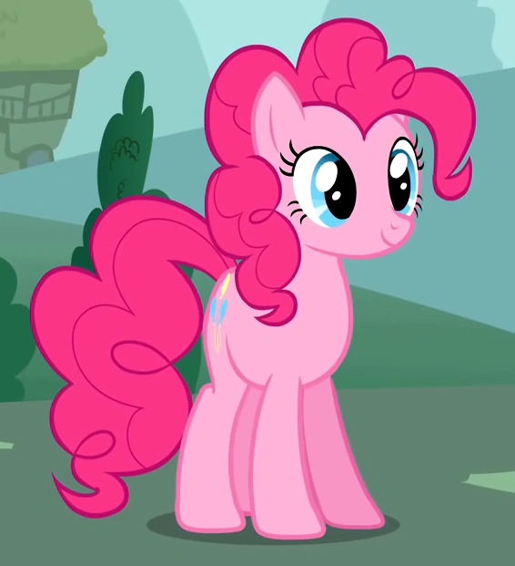
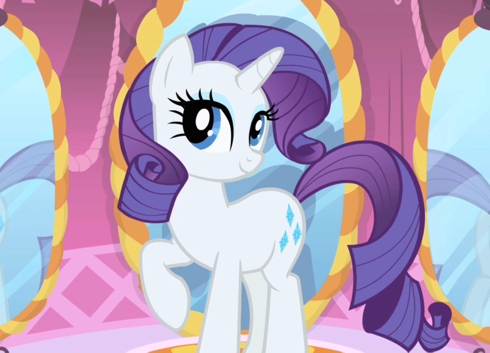
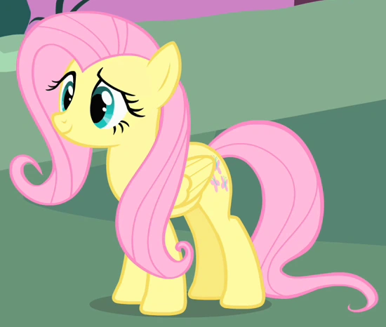

| Pinkie Pie (Elemento de la Risa) |
- La más extrovertida y alegre, siempre organizando fiestas y haciendo reír a los demás. Le encantan los dulces y trabaja en Sugarcube Corner.
|
 |
| Rarity (Elemento de la Generosidad) |
- Una unicornio elegante y talentosa diseñadora de moda. Es creativa y disfruta ayudar a los demás con su estilo refinado.
|  |
| Fluttershy (Elemento de la Bondad) |
- Una pegaso tímida y amorosa con los animales. Aunque es callada, tiene un gran corazón y puede ser valiente cuando es necesario.
|
 |